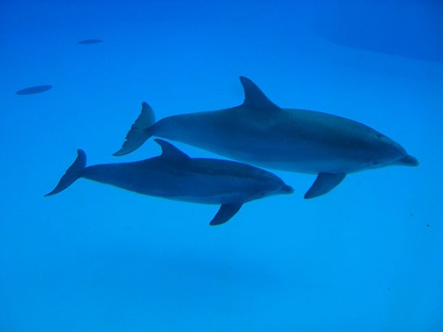
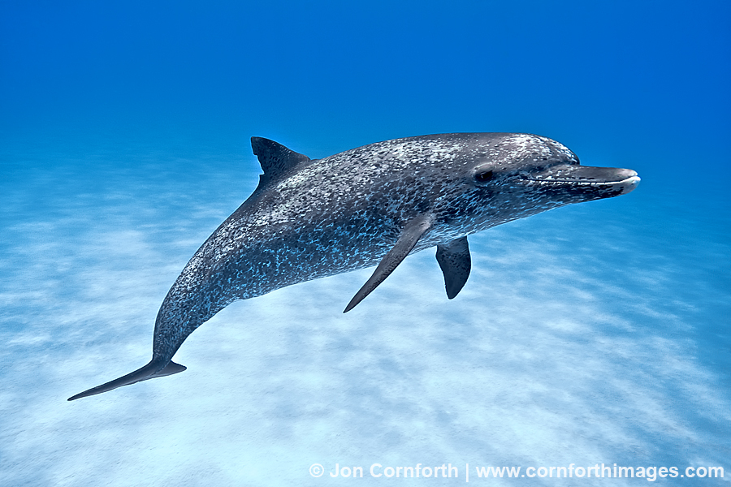
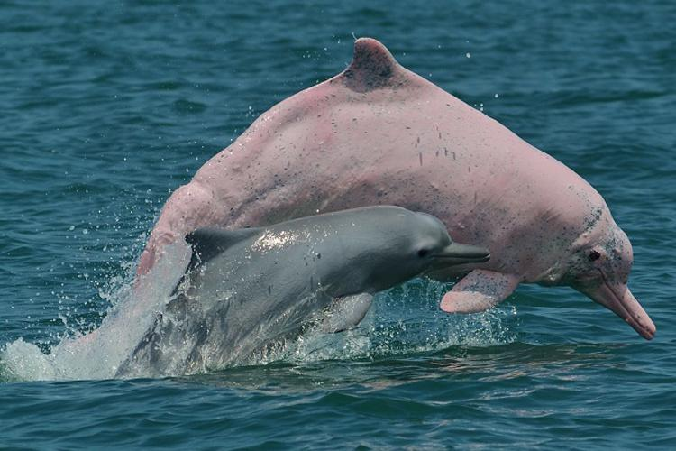
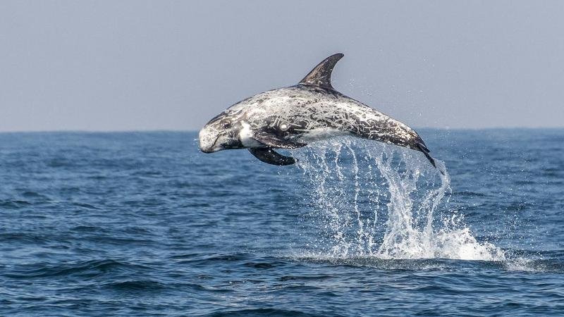

The Dolphin Table
Dolphins come in all shapes and sizes, and while there are too many to count, these
| Common Name | Scientific Name | Trait | Image |
|---|---|---|---|
| Bottlenose Dolphin | Tursiops truncatus | Bottlenose dolphins are one of the most well-known and intelligent species of dolphins. Noticeably has a distinct snout |  |
| Spotted Dolphin | Stenella frontalis | Spotted dolphins are easily recognizable by the dark spots on their bodies. |  |
| Humpback Dolphin | Sousa chinesis | Often tinged pink, abnormally shaped, and has a hump on its back |  |
| Risso's Dolphin | Grampus griseus | Has a white scarring on its body from fighting other dolphins |  |